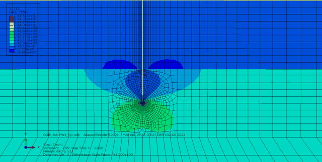
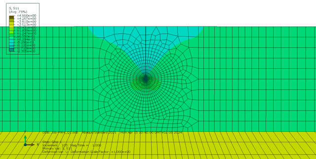
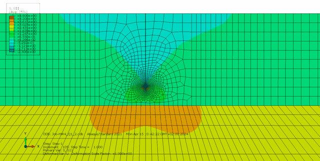
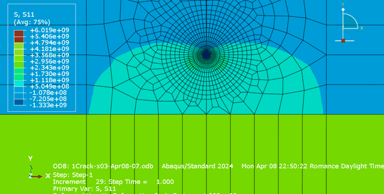
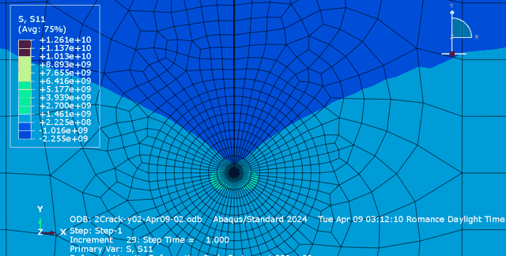
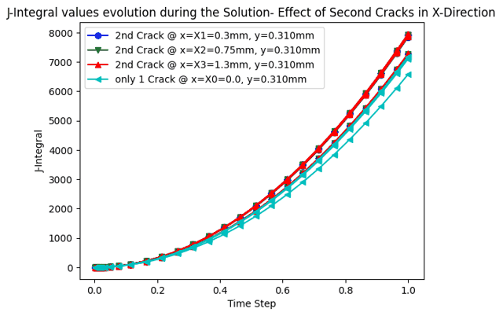
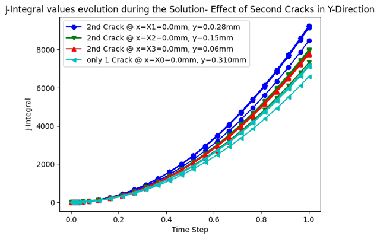
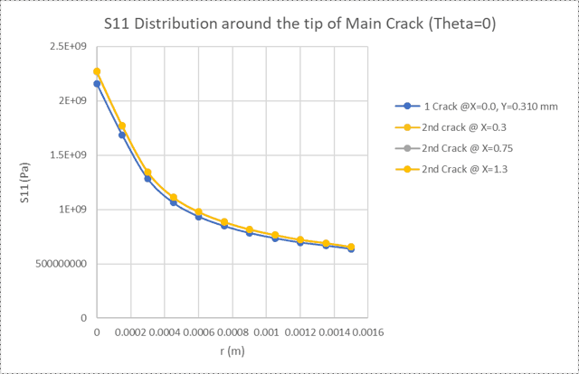
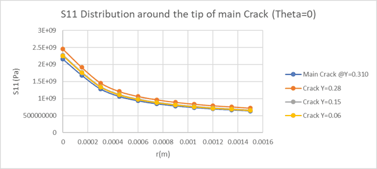

Thermal Fracture of Coated Substrates
Crack driving force and shielding behavior in a thermally loaded coating–substrate system, evaluated with the J-integral and the elastic mismatch parameter Z.

Abstract
A thin coating bonded to a substrate was cooled from 520°C to 20°C in a 2D plane-strain Abaqus model, and a crack was introduced at three depths — inside the coating, at the interface, and into the substrate — to track how the crack driving force evolves as it advances (Z rose from 2.23 to 3.75). A parametric sweep of the substrate's stiffness (100–1600 GPa) showed a consistent shielding effect: J fell as the substrate stiffened. A second study placed a neighboring crack at varying offsets to quantify anti-shielding. Odb field output was driven and post-processed with Python — extracting J-integral and stress-vs-distance histories across every case and generating all comparison charts — and near-tip stress fields were validated against the analytical K-field solution to within 5%.
Simulation results — crack tip stress fields




Crack driving force — J-integral evolution


Near-tip field validation

